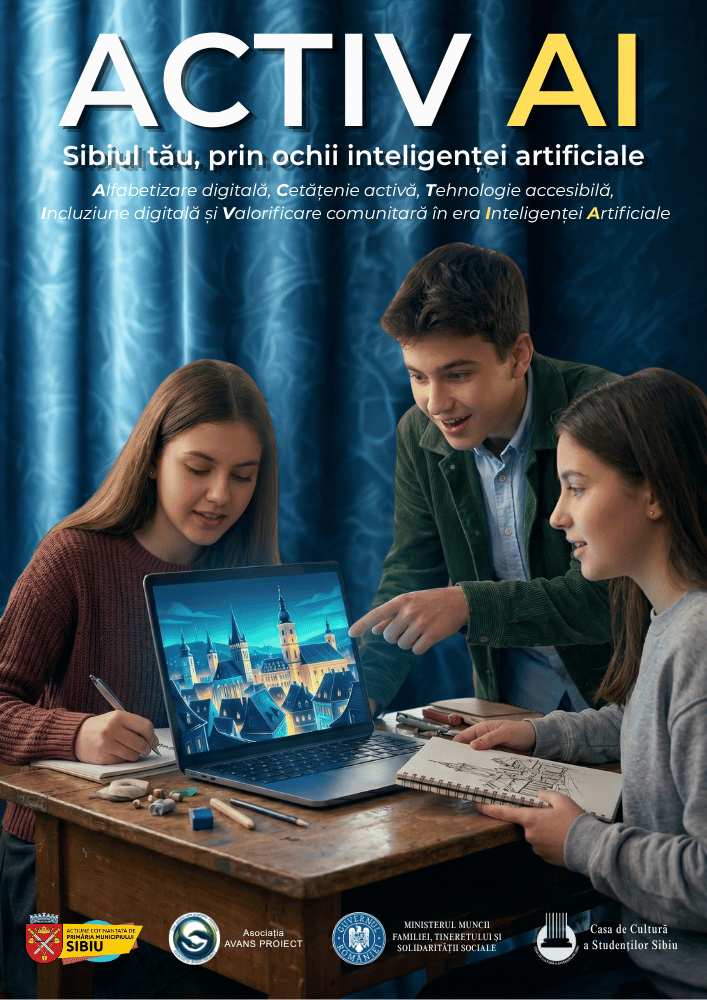

De la alfabetizare digitală la cetățenie activă: RADAR AI și ACTIV AI
Publicat de Asociația Avans Proiect · Septembrie 2026


Am pornit de la o observație simplă: liceenii sibieni au deja acces la instrumente de inteligență artificială, dar puțini au un cadru care să-i ajute să le folosească înțelept. Din acea observație s-au născut, în paralel, două programe cu accente diferite — RADAR AI și ACTIV AI.
RADAR AI — psihoeducație, nu doar tehnologie
RADAR AI pornește de la cinci dimensiuni umane — Reziliență, Autocunoaștere, Discernământ, Abilități, Relații — și le tratează în tandem cu alfabetizarea AI, nu separat de ea. Fiecare sesiune combină un psiholog și un expert AI, exact pentru că am observat că fără componenta psihoeducațională, discuția despre tehnologie devine pur tehnică și pierde miza reală: cum navighează un adolescent, emoțional și cognitiv, o lume în care instrumentele de AI sunt omniprezente.
ACTIV AI — creativitate, nu doar consum
ACTIV AI pornește dintr-o altă direcție: dacă elevii oricum interacționează cu instrumente de AI, de ce să nu le folosească pentru a crea, nu doar pentru a consuma? Cadrele didactice formate în program devin facilitatori de creativitate digitală, iar elevii lor transformă Sibiul — cartierele, poveștile, oamenii — într-o galerie publică de artefacte digitale. Rezultatul nu e doar învățare, e vizibilitate reală pentru munca elevilor, expusă public, nu doar notată în catalog.
Ce am învățat, concret
- Formatul BYOD funcționează — eliminarea barierei de cost (fără laptopuri dedicate, fără instalări) a crescut real accesul.
- Parteneriatul cu liceele contează mai mult decât conținutul singur — fără cadre didactice implicate activ, orice program rămâne un eveniment izolat.
- Diversitatea disciplinară a cadrelor didactice îmbunătățește rezultatul — un profesor de arte și unul de informatică aduc perspective diferite, care se completează.
Încotro mergem
Ambele programe își continuă activitatea în Sibiu, cu cicluri noi de înscrieri pentru cadre didactice și licee partenere. Pe termen mediu, ne dorim să documentăm public rezultatele — nu doar ca raportare instituțională, ci ca resursă pentru alte organizații care iau în calcul programe similare.